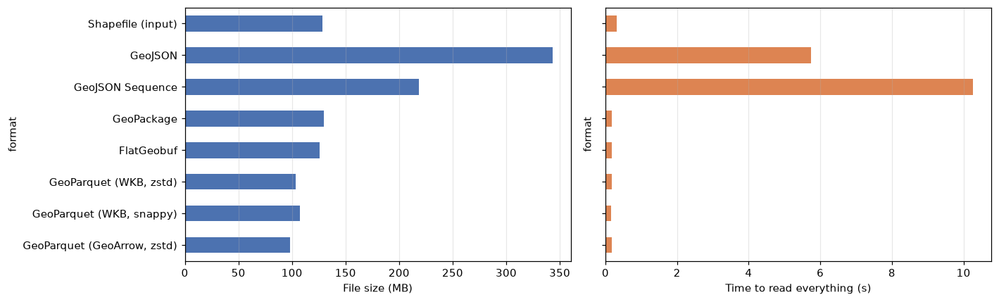
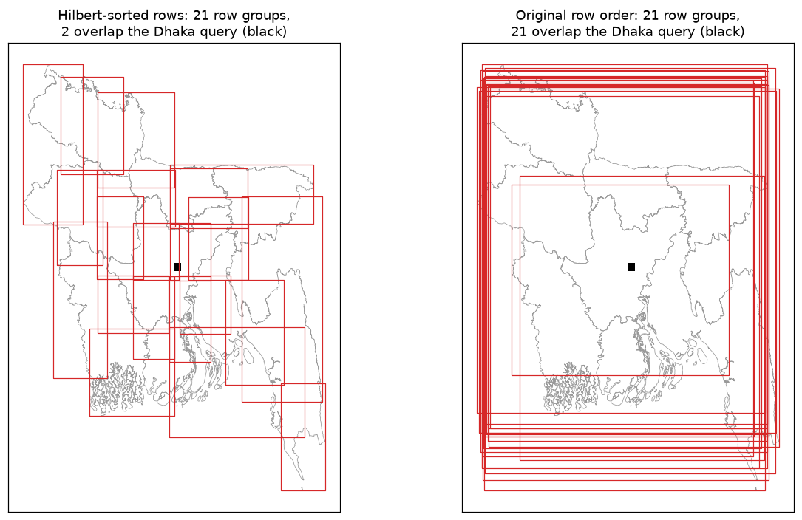
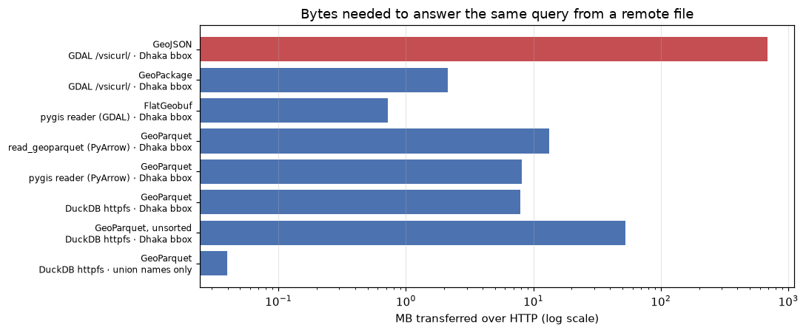
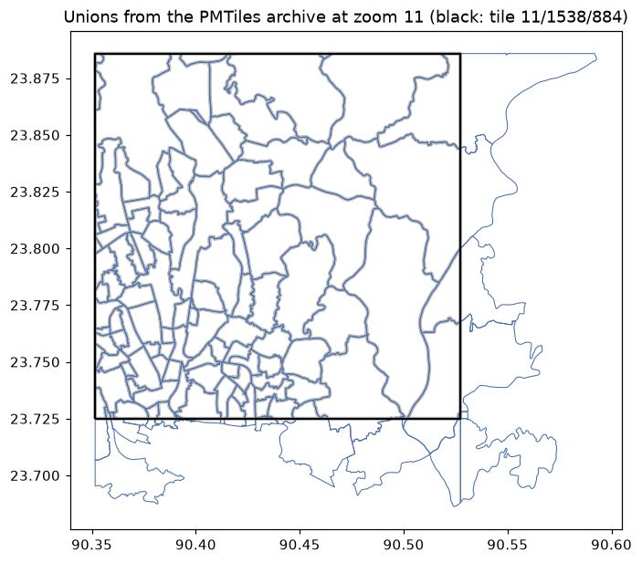

Cloud-Native Vectors: GeoParquet, FlatGeobuf and PMTiles
Vector data have their own cloud-native formats. A shapefile or a GeoJSON file must be read from the beginning to find anything, which is fine on a laptop and slow over the internet. GeoParquet stores features column by column in compressed row groups with statistics, so a reader can skip most of the file; FlatGeobuf puts a spatial index at the front; PMTiles packs pre-cut map tiles into one file. This notebook converts a large real dataset, every union (the smallest administrative unit) of Bangladesh, to these formats, looks inside them, and measures how many bytes each one transfers to answer the same query over HTTP.
Learning objectives
Explain the limits of shapefiles and GeoJSON for large or remote data.
Write GeoParquet (with a bbox covering column and spatial sorting), FlatGeobuf, PMTiles, GeoPackage and GeoJSON Sequences, and compare their size and speed.
Read the row-group structure of a GeoParquet file and see how sorting enables skipping.
Query GeoParquet with bounding boxes, column selection and SQL (DuckDB).
Serve files over HTTP with range requests and measure what each format transfers.
Build and inspect a PMTiles vector-tile archive for web maps.
Data
Data
Source
Union boundaries of Bangladesh (admin level 4), 5,160 polygons, 7.8 million vertices, with division, district and upazila names
Querying GeoParquet locally: bounding boxes, columns and SQL
Over the network: what does each format transfer?
PMTiles: vector tiles in one file
GeoJSON Sequences: streaming features
Choosing a format
Summary and exercises
Setup
Installation. This notebook needs installation option 6 (every GeoLattice module): pip install "geolattice[all]". See “Installation options” in the GeoLattice README.
Code
# Setup: imports, Bangladesh shapefile paths, and a fresh output directory%matplotlib inlineimport warningswarnings.filterwarnings("ignore", category=UserWarning)import jsonimport shutilimport timefrom pathlib import Pathimport numpy as npimport pandas as pdimport geopandas as gpdimport pyarrow.parquet as pqimport matplotlib.pyplot as pltfrom shapely.geometry import boximport geolatticeimport geolattice.web as webfrom geolattice.vector import (open_cloud_native_vector_data, read_geoparquet, write_flatgeobuf, write_geoparquet, write_pmtiles)# Working paths and the central Dhaka query boxplt.rcParams.update({"figure.dpi": 110})DATA = Path("../../../Data")BD = DATA /"00_shared"/"vector_data"/"Bangladesh"/"Shapefiles"OUT = DATA /"00_shared"/"data_web_cloud_gis"/"08_02_outputs"if OUT.exists(): shutil.rmtree(OUT)OUT.mkdir(parents=True)DHAKA = (90.35, 23.70, 90.45, 23.82) # central Dhaka, lon/latprint("geolattice", geolattice.__version__, "| outputs:", OUT)
# Load Bangladesh union and division polygons; time the shapefile readt0 = time.perf_counter()unions = gpd.read_file(BD /"bd_union_GCS.shp")t_read_shp = time.perf_counter() - t0divisions = gpd.read_file(BD /"bd_division_GCS.shp")print(f"{len(unions):,} unions, {int(unions.geometry.count_coordinates().sum()):,} vertices, CRS {unions.crs}, "f"read in {t_read_shp:.2f} s")unions[["ADM4_EN", "ADM3_EN", "ADM2_EN", "ADM1_EN", "ADM4_PCODE"]].head()
5,160 unions, 7,768,324 vertices, CRS EPSG:4326, read in 0.31 s
ADM4_EN
ADM3_EN
ADM2_EN
ADM1_EN
ADM4_PCODE
0
Abaipur
Shailkupa
Jhenaidah
Khulna
BD40448010
1
Abdullahpur
Tongibari
Munshiganj
Dhaka
BD30599411
2
Abdullapur
Char Fasson
Bhola
Barisal
BD10092513
3
Abdullapur
Fatikchhari
Chittagong
Chittagong
BD20153311
4
Abdulpur
Kushtia Sadar
Kushtia
Khulna
BD40507916
Why not shapefiles and GeoJSON?
The shapefile (1990s, Esri) is still the most common GIS file, but it is a bundle of separate files, has a 2 GB limit per file, stores attributes in an old dBASE table with 10-character field names, has no compression, and keeps no spatial index unless extra index files are made. GeoJSON is a single text file that every web tool reads, but it is large (coordinates are written as text) and has to be parsed from start to end.
Code
# Show shapefile sidecar sizes and the classic 10-character field-name limitparts =sorted(BD.glob("bd_union_GCS.*"))print(f"One shapefile = {len(parts)} files, {sum(p.stat().st_size for p in parts) /1e6:.1f} MB:")for p in parts:print(f" {p.name:22s}{p.stat().st_size /1e6:8.2f} MB")long_names = [c for c in unions.columns iflen(c) ==10]print("Field names cut to 10 characters:", long_names)
Field names such as ADM4ALT1EN and ADM4ALT2EN are abbreviations forced by the 10-character limit (alternative English names 1 and 2). The modern formats below keep full names, typed columns and one file per dataset.
Writing cloud-native formats
We write the same 5,160 unions in seven ways and compare file size, write time and the time to read the whole file back.
Format
Layout
Spatial access
GeoJSON
Text, one document
None: parse everything
GeoJSON Sequence
Text, one feature per line
Streamable, no index
GeoPackage
SQLite database
R-tree index, but SQLite pages need many small reads remotely
FlatGeobuf
Binary rows (FlatBuffers)
Packed Hilbert R-tree at the start of the file
GeoParquet
Columnar, compressed row groups
Row-group statistics (bbox covering column)
PMTiles
Pre-cut vector tiles
Tile directory; for display, not analysis (Section 7)
# Plot file size and full-read time across the formats just writtenfig, axes = plt.subplots(1, 2, figsize=(13, 4))formats["MB"].plot.barh(ax=axes[0], color="#4c72b0"); axes[0].set_xlabel("File size (MB)")formats["read s"].plot.barh(ax=axes[1], color="#dd8452"); axes[1].set_xlabel("Time to read everything (s)")for a in axes: a.invert_yaxis(); a.grid(axis="x", alpha=0.3)axes[1].set_yticklabels([])plt.tight_layout(); plt.show()

The same 5,160 unions take very different space:
GeoJSON is 343 MB, 2.7 times the shapefile, because every coordinate is written as text. It took about 12 s to write and 6 s to read.
GeoJSON Sequence is smaller (219 MB, without indentation) but just as slow to parse.
GeoPackage and FlatGeobuf are about the shapefile’s size (130 and 126 MB) and read in under 0.2 s.
GeoParquet is the smallest: 103 MB with zstd compression, 108 MB with snappy, and 98 MB with the GeoArrow geometry encoding, which stores coordinates as plain numeric arrays rather than WKB blobs. It reads as fast as the binary formats.
Polygon coordinates are dense floating-point numbers that compress only modestly. For tables with many attribute columns, GeoParquet’s advantage is much larger.
Inside a GeoParquet file
A GeoParquet file is a Parquet table with a geo metadata entry. Rows are grouped into row groups; inside each group every column is stored and compressed separately, and the footer records each column’s minimum and maximum per group. GeoParquet 1.1 adds a bbox covering column (bbox.xmin, bbox.ymin, bbox.xmax, bbox.ymax for every feature), so the footer statistics describe the extent of each row group. write_geoparquet also sorts features along a Hilbert curve, so that nearby features end up in the same row group.
Code
# Inspect GeoParquet metadata: encoding, row groups, CRS, and columnsinfo = web.geoparquet_info(OUT /"unions.parquet")display(pd.Series({k: info[k] for k in ["version", "primary_column", "encoding", "geometry_types", "covering","num_rows", "num_row_groups"]}, name="unions.parquet").to_frame())print("CRS:", info["crs"].name, "| columns:", ", ".join(info["columns"][:8]), "…")
# Compare Hilbert-sorted vs unsorted row-group extents for a Dhaka bbox# Build polygons from each row group's bbox statisticsdef row_group_extents(path): meta = pq.ParquetFile(path).metadata out = []for g inrange(meta.num_row_groups): rg = meta.row_group(g) stats = {rg.column(i).path_in_schema: rg.column(i).statistics for i inrange(rg.num_columns)} out.append(box(stats["bbox.xmin"].min, stats["bbox.ymin"].min, stats["bbox.xmax"].max, stats["bbox.ymax"].max))return gpd.GeoDataFrame(geometry=out, crs=4326)# Write an unsorted copy, then map which row groups hit Dhakawrite_geoparquet(OUT /"unions_unsorted.parquet", unions, sort_spatially=False, row_group_size=256)fig, axes = plt.subplots(1, 2, figsize=(12, 6.5))hits = {}for ax, (label, fname) inzip(axes, [("Hilbert-sorted rows", "unions.parquet"), ("Original row order", "unions_unsorted.parquet")]): ext = row_group_extents(OUT / fname) hits[label] =int(ext.intersects(box(*DHAKA)).sum()) divisions.boundary.plot(ax=ax, color="0.6", lw=0.5) ext.boundary.plot(ax=ax, color="#d62728", lw=0.8) gpd.GeoSeries([box(*DHAKA)], crs=4326).plot(ax=ax, color="k") ax.set_title(f"{label}: {len(ext)} row groups,\n{hits[label]} overlap the Dhaka query (black)") ax.set_xticks([]); ax.set_yticks([])plt.tight_layout(); plt.show()

Each red box is the extent of one row group, read from the file’s footer. With Hilbert-sorted rows the 21 row groups each cover a compact region, and only 2 of them can contain features in central Dhaka, so a reader can skip the other 19 using the statistics alone. With the original row order (alphabetical by union name) every row group spans almost the whole country and all 21 overlap the query, so nothing can be skipped. The covering column only pays off when the rows are spatially sorted, which is why write_geoparquet sorts by default.
Querying GeoParquet locally: bounding boxes, columns and SQL
read_geoparquet passes the bounding box to the Parquet reader, which uses the row-group statistics to read only matching groups, then trims to the exact box. Because the file is columnar, reading a few attribute columns is also cheap.
Code
# Time a bbox query, an attribute-only read, and a full GeoParquet loadtimings = {}t0 = time.perf_counter(); dhaka = read_geoparquet(OUT /"unions.parquet", bbox=DHAKA); timings["bbox query (Dhaka)"] = time.perf_counter() - t0t0 = time.perf_counter(); names = pq.read_table(OUT /"unions.parquet", columns=["ADM4_EN", "ADM2_EN", "ADM1_EN"]).to_pandas()timings["three attribute columns, no geometry"] = time.perf_counter() - t0t0 = time.perf_counter(); everything = read_geoparquet(OUT /"unions.parquet"); timings["everything"] = time.perf_counter() - t0print(f"Dhaka query: {len(dhaka)} unions in {dhaka['ADM2_EN'].nunique()} districts "f"({', '.join(sorted(dhaka['ADM2_EN'].unique()))})")pd.Series(timings, name="seconds").round(3).to_frame()
Dhaka query: 124 unions in 1 districts (Dhaka)
seconds
bbox query (Dhaka)
0.036
three attribute columns, no geometry
0.004
everything
0.161
SQL on files. DuckDB is an in-process analytical database that queries Parquet files directly, with no server and no import step. Its spatial extension adds PostGIS-style functions. Notebook 08_03 goes further; here two questions show the idea: how many unions each division has, and which unions intersect central Dhaka, using the bbox columns first and the exact geometry second.
Code
# Aggregate and spatially filter GeoParquet with DuckDB + the spatial extensionimport duckdbcon = duckdb.connect()con.sql("INSTALL spatial; LOAD spatial; SET enable_progress_bar = false;")src = (OUT /"unions.parquet").as_posix()# Per-division counts and area from Parquet without loading into GeoPandasper_division = con.sql(f''' SELECT ADM1_EN AS division, count(*) AS unions, count(DISTINCT ADM2_EN) AS districts, round(sum(ST_Area_Spheroid(ST_FlipCoordinates(geometry))) / 1e6) AS area_km2 FROM read_parquet('{src}') GROUP BY division ORDER BY unions DESC''').df()display(per_division)# Bbox + geometry intersect for central Dhakaxmin, ymin, xmax, ymax = DHAKAin_dhaka = con.sql(f''' SELECT ADM4_EN AS union_name, ADM3_EN AS upazila FROM read_parquet('{src}') WHERE bbox.xmax >= {xmin} AND bbox.xmin <= {xmax} AND bbox.ymax >= {ymin} AND bbox.ymin <= {ymax} AND ST_Intersects(geometry, ST_MakeEnvelope({xmin}, {ymin}, {xmax}, {ymax}))''').df()print(f"DuckDB: {len(in_dhaka)} unions intersect central Dhaka (GeoPandas: {len(dhaka)})")
division
unions
districts
area_km2
0
Dhaka
1078
13
20383.0
1
Chittagong
1063
11
31147.0
2
Rajshahi
654
8
18229.0
3
Khulna
642
10
20750.0
4
Rangpur
565
8
16287.0
5
Barisal
401
6
10140.0
6
Sylhet
379
4
12373.0
7
Mymensingh
378
4
10545.0
DuckDB: 124 unions intersect central Dhaka (GeoPandas: 124)
Locally, the Dhaka query took 0.03 s against 0.16 s for the whole file. Reading three attribute columns without geometry took 0.004 s: in a columnar file the geometry, almost all of the bytes, is simply not touched.
DuckDB answered both questions straight from the file, with no import step:
Dhaka division has the most unions (1,078 in 13 districts), but Chittagong has the largest area (about 31,000 km² on the WGS 84 ellipsoid).
The same 124 unions intersect central Dhaka in DuckDB and GeoPandas.
ST_FlipCoordinates is needed because ST_Area_Spheroid expects latitude first.
Over the network: what does each format transfer?
Locally every format is “fast enough”. Over the internet the question is how many bytes and how many requests a query needs. web.static_server serves our output folder over HTTP with range requests, like an object store, and counts what it sends. We ask every format the same question, which unions intersect central Dhaka?, and a second, attribute-only question.
Code
# Serve files over HTTP and measure bytes transferred per format/tool for a Dhaka queryfrom osgeo import ogr, gdalgdal.UseExceptions()# Helper queries used by the remote timing loop belowdef ogr_bbox_count(url): ds = ogr.Open(web.to_vsi_path(url)) layer = ds.GetLayer(0) layer.SetSpatialFilterRect(*DHAKA)returnsum(1for _ in layer)def reader_bbox_count(url):with open_cloud_native_vector_data(url) as ds:returnlen(ds.layer.to_dataframe(bbox=DHAKA))def duckdb_bbox_count(url):return con.sql(f'''SELECT count(*) FROM read_parquet('{url}') WHERE bbox.xmax >= {xmin} AND bbox.xmin <= {xmax} AND bbox.ymax >= {ymin} AND bbox.ymin <= {ymax} AND ST_Intersects(geometry, ST_MakeEnvelope({xmin}, {ymin}, {xmax}, {ymax}))''').fetchone()[0]# Local static server + cloud env; reset stats before each runcon.sql("INSTALL httpfs; LOAD httpfs;")results = []with web.static_server(OUT) as srv, web.cloud_env():def run(fmt, tool, query, fn, fname): srv.reset(); t0 = time.perf_counter(); n = fn(f"{srv.url}/{fname}") results.append({"format": fmt, "tool": tool, "query": query, "features": n, "requests": srv.stats["requests"],"MB transferred": srv.stats["bytes"] /1e6, "file MB": (OUT / fname).stat().st_size /1e6,"seconds": time.perf_counter() - t0}) run("GeoJSON", "GDAL /vsicurl/", "Dhaka bbox", ogr_bbox_count, "unions.geojson") run("GeoPackage", "GDAL /vsicurl/", "Dhaka bbox", ogr_bbox_count, "unions.gpkg") run("FlatGeobuf", "geolattice reader (GDAL)", "Dhaka bbox", reader_bbox_count, "unions.fgb") run("GeoParquet", "read_geoparquet (PyArrow)", "Dhaka bbox", lambda u: len(read_geoparquet(u, bbox=DHAKA)), "unions.parquet") run("GeoParquet", "geolattice reader (PyArrow)", "Dhaka bbox", reader_bbox_count, "unions.parquet") run("GeoParquet", "DuckDB httpfs", "Dhaka bbox", duckdb_bbox_count, "unions.parquet") run("GeoParquet, unsorted", "DuckDB httpfs", "Dhaka bbox", duckdb_bbox_count, "unions_unsorted.parquet") run("GeoParquet", "DuckDB httpfs", "union names only",lambda u: len(con.sql(f"SELECT ADM4_EN FROM read_parquet('{u}')").fetchall()), "unions.parquet")remote = pd.DataFrame(results)remote["% of file"] = (remote["MB transferred"] / remote["file MB"] *100).round(1)remote.round(3).set_index(["format", "tool", "query"])
features
requests
MB transferred
file MB
seconds
% of file
format
tool
query
GeoJSON
GDAL /vsicurl/
Dhaka bbox
124
337
686.125
343.063
7.619
200.0
GeoPackage
GDAL /vsicurl/
Dhaka bbox
124
58
2.134
129.798
0.106
1.6
FlatGeobuf
geolattice reader (GDAL)
Dhaka bbox
124
10
0.721
126.159
0.063
0.6
GeoParquet
read_geoparquet (PyArrow)
Dhaka bbox
124
7
13.272
103.195
0.161
12.9
geolattice reader (PyArrow)
Dhaka bbox
124
6
8.094
103.195
0.101
7.8
DuckDB httpfs
Dhaka bbox
124
11
7.943
103.195
0.027
7.7
GeoParquet, unsorted
DuckDB httpfs
Dhaka bbox
124
92
52.550
110.212
1.256
47.7
GeoParquet
DuckDB httpfs
union names only
5160
21
0.039
103.195
1.255
0.0
Code
# Log-scale bar chart of HTTP bytes transferred for each remote queryfig, ax = plt.subplots(figsize=(10, 4.2))labels = remote["format"] +"\n"+ remote["tool"] +" · "+ remote["query"]ax.barh(labels, remote["MB transferred"], color=["#c44e52"if"GeoJSON"in f else"#4c72b0"for f in remote["format"]])ax.set_xscale("log"); ax.set_xlabel("MB transferred over HTTP (log scale)")ax.invert_yaxis(); ax.grid(axis="x", alpha=0.3); ax.tick_params(axis="y", labelsize=8)ax.set_title("Bytes needed to answer the same query from a remote file")plt.tight_layout(); plt.show()

All tools returned the same 124 unions, but the cost differed enormously:
Format and tool
Transferred
Requests
GeoJSON
686 MB, twice the file
337
GeoPackage
2.1 MB
58
FlatGeobuf
0.72 MB (0.6%)
10
GeoParquet, sorted (DuckDB / GeoLattice reader)
about 8 MB
6-11
GeoParquet, sorted (read_geoparquet)
13 MB
7
GeoParquet, unsorted
53 MB
92
GeoParquet, names only (DuckDB)
0.04 MB
21
GeoJSON has no index, and GDAL read it twice.
GeoPackage works because its SQLite R-tree is read page by page.
FlatGeobuf was the most efficient for a spatial window: its R-tree at the front points straight at the matching features.
Sorted GeoParquet needed about 8 MB with DuckDB or the GeoLattice reader, because it skips row groups but reads whole ones. read_geoparquet read 13 MB because PyArrow fetches some additional columns. Unsorted, the same query cost 53 MB.
Attribute questions are where GeoParquet shines: listing all 5,160 union names transferred only 39 kB, because the geometry column was never read.
Building this comparison exposed two bugs, now fixed in GeoLattice: the cloud-native reader could not open GeoParquet over HTTP, and its bounding-box reads did not skip row groups (an earlier run of this query transferred 2 GB).
PMTiles: vector tiles in one file
Web maps do not draw raw features at every zoom; they draw vector tiles, small pre-cut, simplified pieces of the data per {z}/{x}/{y} tile, in the Mapbox Vector Tile format. PMTiles stores a whole tile pyramid in one file with a directory at the start, so a map in the browser fetches each tile with a range request from static storage, with no tile server.
Code
# Write a PMTiles archive of unions and summarize its header fieldst0 = time.perf_counter()pm = write_pmtiles(OUT /"unions.pmtiles", unions[["ADM4_EN", "ADM3_EN", "ADM2_EN", "ADM1_EN", "geometry"]], layer="unions", minzoom=4, maxzoom=11)print(f"PMTiles written in {time.perf_counter() - t0:.1f} s, {Path(pm).stat().st_size /1e6:.1f} MB")with open_cloud_native_vector_data(pm) as ds: header = ds.details["header"] meta = ds.details["metadata"]pd.Series({k: header[k] for k in ["version", "tile_type_name", "tile_compression_name", "min_zoom", "max_zoom","addressed_tiles", "tile_contents", "tile_data_length", "root_length", "metadata_length"]}, name="unions.pmtiles").to_frame()
PMTiles written in 13.8 s, 22.0 MB
unions.pmtiles
version
3
tile_type_name
mvt
tile_compression_name
gzip
min_zoom
4
max_zoom
11
addressed_tiles
825
tile_contents
825
tile_data_length
22028071
root_length
2189
metadata_length
1867
Code
# Fetch one remote PMTiles tile over Dhaka, decode features, and compare to the sourcez =11tile = web.lonlat_to_tile(90.40, 23.76, z)# Open remotely and record requests needed for header + one tilewith web.static_server(OUT) as srv: srv.reset()with open_cloud_native_vector_data(f"{srv.url}/unions.pmtiles") as ds: opened =dict(srv.stats) raw = ds.read_tile(tile.z, tile.x, tile.y, decode=False) fetched =dict(srv.stats)print(f"Tile {tile.z}/{tile.x}/{tile.y} over central Dhaka: {len(raw):,} bytes (gzip-compressed MVT)")print(f"Opening the remote archive: {opened['requests']} request(s), {opened['bytes']:,} bytes; "f"opening + one tile: {fetched['requests']} request(s), {fetched['bytes']:,} bytes "f"of a {Path(pm).stat().st_size /1e6:.1f} MB file")# Decode the same tile locally and overlay against original polygonswith open_cloud_native_vector_data(pm, open_options={"ZOOM_LEVEL": str(z)}) as ds:print("Decoded layer CRS:", ds.layer.crs) # vector tiles are in Web Mercator tile_features = ds.layer.to_dataframe(bbox=web.tile_bounds(*tile, crs="EPSG:3857"))tile_features = tile_features.set_crs(3857, allow_override=True).to_crs(4326)print(f"Decoded zoom-{z} features overlapping that tile: {len(tile_features)}")original = unions[unions.intersects(box(*web.tile_bounds(*tile)))]print(f"Original unions intersecting the tile: {len(original)}; vertices in the tile's features: "f"{int(tile_features.geometry.count_coordinates().sum()):,} (tiles) vs "f"{int(original.clip(box(*web.tile_bounds(*tile))).geometry.count_coordinates().sum()):,} (original, clipped)")# Original clipped geometries (grey) vs tile features (blue)fig, ax = plt.subplots(figsize=(6.5, 6.5))original.clip(box(*web.tile_bounds(*tile))).boundary.plot(ax=ax, color="0.75", lw=2.5, label="original")tile_features.boundary.plot(ax=ax, color="#4c72b0", lw=0.7, label="from the tile")gpd.GeoSeries([box(*web.tile_bounds(*tile))], crs=4326).boundary.plot(ax=ax, color="k", lw=1.5)ax.set_title(f"Unions from the PMTiles archive at zoom {z} (black: tile {tile.z}/{tile.x}/{tile.y})")plt.tight_layout(); plt.show()
Tile 11/1538/884 over central Dhaka: 28,309 bytes (gzip-compressed MVT)
Opening the remote archive: 4 request(s), 20,567 bytes; opening + one tile: 5 request(s), 48,876 bytes of a 22.0 MB file
Decoded layer CRS: EPSG:3857
Decoded zoom-11 features overlapping that tile: 131
Original unions intersecting the tile: 106; vertices in the tile's features: 24,054 (tiles) vs 17,543 (original, clipped)

The PMTiles archive (zooms 4-11) is 22 MB: 825 tiles, gzip-compressed Mapbox Vector Tiles.
Opening it over HTTP read only the header, directory and metadata: 4 requests and 20 kB. Fetching the zoom-11 tile over central Dhaka added one request of 28 kB. A web map works the same way, touching only the tiles on screen. An earlier version of the GeoLattice reader decoded every tile on open to count features, costing 8 MB; it now defers that count for remote archives.
The decoded tile gives 131 features against the 106 unions that intersect the tile. Two reasons:
the reader returns features from the tiles touching the query box;
each vector tile includes a buffer beyond its edge so that lines do not break at tile seams.
Tile geometries are also quantized to the tile’s grid and simplified for their zoom, which is why PMTiles is for display, not analysis.
GeoJSON Sequences: streaming features
A GeoJSON Sequence (.geojsonl, newline-delimited GeoJSON) puts one complete feature on each line, so a program can process features one at a time while reading, append new ones without rewriting the file, and split work across machines by line. It is a good exchange and logging format for streams of features, even though it has no index.
Code
# Stream the first few GeoJSON Sequence features without loading the whole fileseq = OUT /"unions.geojsonl"first = []withopen(seq) as handle:for line in handle: first.append(json.loads(line))iflen(first) ==3:breakfor f in first:print(f["properties"]["ADM4_EN"], "|", f["properties"]["ADM2_EN"], "|", f["geometry"]["type"],len(json.dumps(f)), "characters")total_lines =sum(1for _ inopen(seq))print(f"{total_lines:,} lines = {total_lines:,} features; we parsed only 3 of them")
Abaipur | Jhenaidah | Polygon 32285 characters
Abdullahpur | Munshiganj | Polygon 16479 characters
Abdullapur | Bhola | Polygon 12378 characters
5,160 lines = 5,160 features; we parsed only 3 of them
Choosing a format
Task
Best choice
Why
Analysis of large tables, data lakes, sharing with data-science tools
GeoParquet (sorted, with bbox covering)
Smallest, fastest, columnar; read by GeoPandas, DuckDB, Spark, BigQuery, R
Spatial windows from a remote file with GIS tools
FlatGeobuf
Spatial index at the start; streams with GDAL and in the browser
Showing data on a web map
PMTiles (vector tiles)
One static file, no tile server; simplified per zoom
Editing, multi-layer projects, desktop GIS
GeoPackage
Standard SQLite container, edits in place
Small datasets for web pages and APIs
GeoJSON
Universal, human-readable
Streams and logs of features
GeoJSON Sequence
One feature per line, append-only
Exchange with legacy software only
Shapefile
Supported everywhere, but avoid for new data
Summary and exercises
Key ideas
Shapefiles and GeoJSON must be read whole; cloud-native formats are laid out so a reader can fetch only what a query needs.
GeoParquet is columnar and compressed; with a bbox covering column and Hilbert-sorted rows, its row-group statistics let readers skip most of the file.
FlatGeobuf’s packed R-tree gives spatial windows over HTTP; PMTiles gives map tiles from one static file.
DuckDB queries GeoParquet locally or over HTTP with SQL and no server.
Always measure: requests and bytes, not just seconds, decide cloud performance.
What we measured (5,160 unions, 7.8 million vertices)
A remote Dhaka query transferred 686 MB from GeoJSON, 2.1 MB from GeoPackage, 0.72 MB from FlatGeobuf and about 8 MB from sorted GeoParquet; unsorted GeoParquet needed 53 MB.
An attribute-only query on GeoParquet transferred 39 kB.
A PMTiles archive opened remotely with 20 kB and served a tile with 28 kB more.
Exercises
Rewrite unions.parquet with row_group_size=64 and 1024. How do file size and the bytes transferred for the Dhaka query change?
Write the district layer (bd_district_GCS.shp) to FlatGeobuf without a spatial index (spatial_index=False) and repeat the remote query. What changes?
Use DuckDB over HTTP to compute the number of unions per district in Rajshahi division without downloading the geometry column. How many bytes are transferred?
Build a PMTiles archive with maxzoom=13. How do the size and the number of tiles grow?
Convert the US county layer (Data/00_shared/vector_data/USA/US_COUNTY.shp) to GeoParquet and query all counties of New York State with DuckDB.